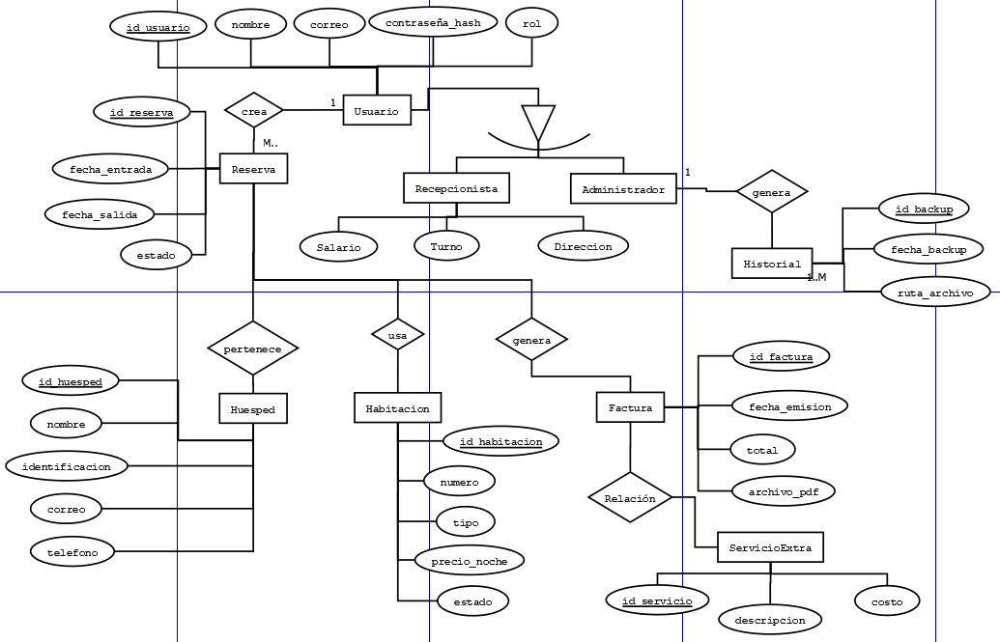
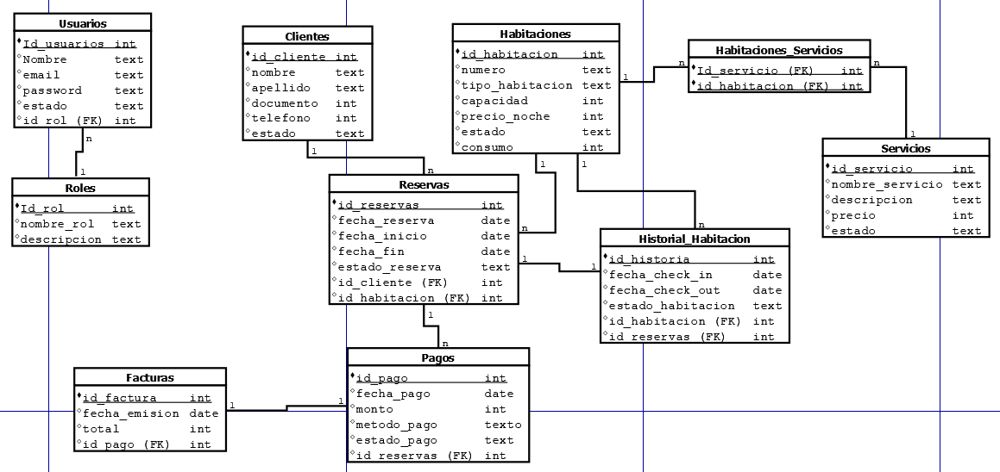

Diagrama ER

El diagrama Entidad-Relación (ER) representa de forma conceptual la estructura de la base de datos del sistema. Permite identificar las entidades principales, sus atributos y las relaciones que existen entre ellas. Su función es mostrar cómo se organiza la información dentro del sistema antes de su implementación técnica.
Diagrama MER

El diagrama Modelo Entidad-Relación (MER) es una representación más detallada y técnica del diagrama ER. Incluye información adicional sobre las claves primarias, claves foráneas, tipos de datos y restricciones de integridad. Su función es servir como guía para la implementación de la base de datos, asegurando que se cumplan los requisitos de diseño y se mantenga la integridad de los datos.
Documento completo: Descargar Diagrama MER y ER en PDF